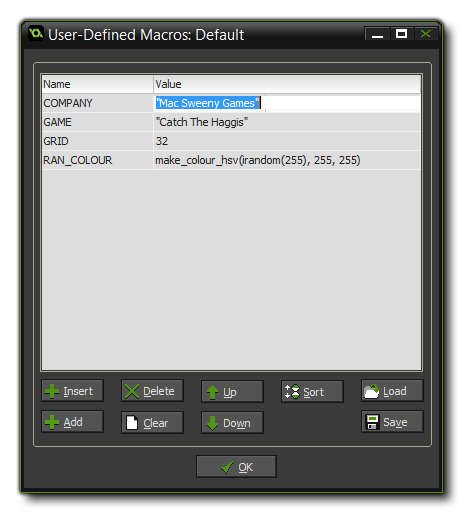

A macro is, as the name implies, something that can hold
a constant value (real, or boolean) or a string, or an expression.
This is different to a variable in that it can't be changed once
defined, although it is global in scope as all instances in all
rooms can use it, and it will always be the same value
unless you use a GML function as the value. There are a number of
built-in constants within GameMaker: Studio, like the
vk_ ones for the keyboard or the c_ ones that
hold different colours, but you can also define your own constants
and function macros to be used in your games too.
To define macros you chose Define Macro from the drop down
Resources menu at the top of the main window (or click on
the resource tree icons, as explained below) and the following
window will open:  The main part of this window is
take up with the list of macros, and will start off empty, ready
for you to create your own. To do this you would click on the
button marked Add at the bottom left of the window, which
will then create a new, empty, macro with the Name section
highlighted. You must give all your macros a name, and as with all
things in GameMaker: Studio this name must be unique and it
is recommended that you distinguish it in some way from other
variables, for example, by using all capitals, or by using a suffix
or prefix. Note, that you cannot use any symbols except the
under-bar (_) and the macro cannot start with a number.
Once you have named your new macro you must give it a value. This
value can be numeric, a function or a string. For a string it
must be wrapped in quotes ("") and if it is a function, it
cannot make reference to anything in the game (the current room,
instances, or scripts etc...) as the macros are initialised
before everything else, but it can however use resources
like sprites and objects.
When you have defined a few macros you can use the buttons at the
bottom of the window to change them around and add, insert or
delete them. Add will add one at the end of the list,
Insert will insert the next macro above the current one, and
delete will delete the current one. You may also press Clear
to clear the whole list of macros, which will open a prompt to ask
if you are sure you really want to do that before deleting the
whole list. beside these button are two labelled Up and
Down which simply move the macros up and down the list, and
beside those is the sort button which will put the macros
into alphabetical order, with the ones starting with "A" at the
top.
Finally, there are two buttons marked Load and Save.
With these, you can load into your project macros that you have
previously defined in an external editor, or that you have saved
from a previous game. If you have already defined macros when you
load some from a file, the new ones will be appended on at the end
of the list. A saved macro list is stored in a simple
*.txt file and can easily be edited and added to by any
application that reads these files (Notepad++, for example). You
can even pre-define your own text file with a set of macros to be
loaded into GameMaker: Studio as the format is simply:
NAME = VALUE.
It is worth noting that when using an expression in a macro, if this contains a function then no constant value can be created for it, and it will be evaluated every time the macro is called. For example, you could have the following macro:
myran : irandom(100)
Now every time you call the macro myran it will return a different random number. If the expression can be evaluated to a single value or string, then the macro will function like a constant, for example:
mynumb : "10"
myname : "Hamish"
myconst : mynumb + myname
As you can see in the above example the last macro is an
expression using the previously created two macros. This will be
evaluated once on startup and a constant value returned for it.
Macro are included as part of the resource tree on the
left of the GameMaker: Studio IDE. When you create a new
game, you will have two sets of macros - All Configurations
and Default. Macro created in "All Configurations" will be
available to you no matter what configuration you have chosen (see
the section on Configurations
for more information), and you can then add configuration-specific
ones to any other lists that you will have, with each new
configuration creating a new macros list.